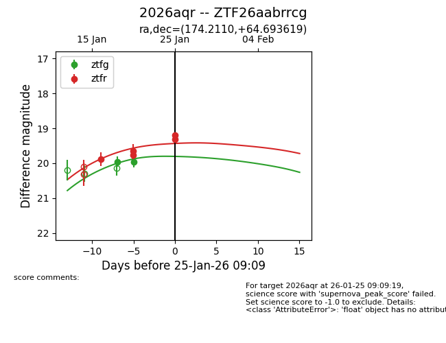
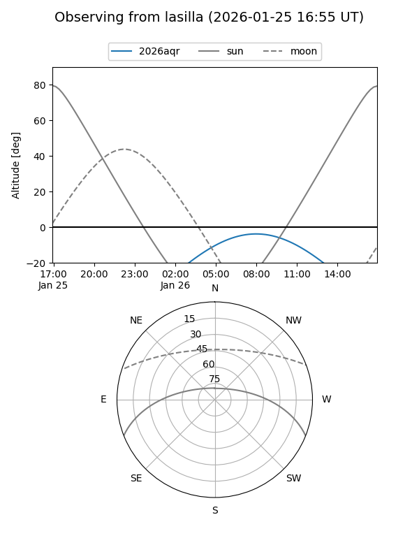
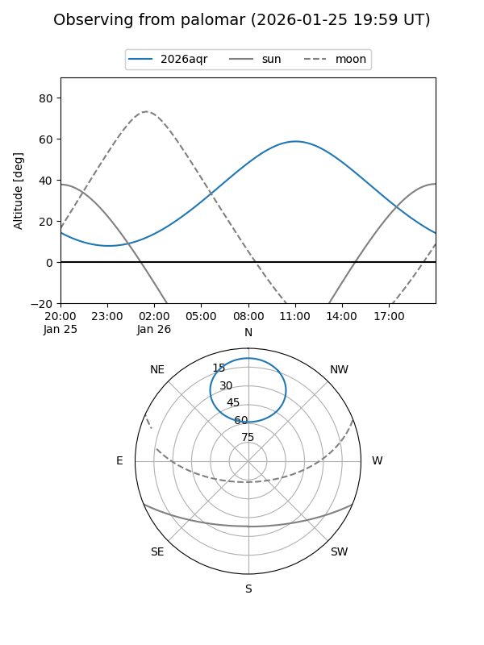
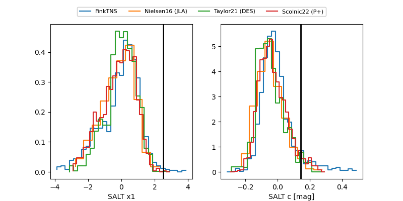

2026aqr
Target 2026aqr at 2026-01-25 10:01
Aliases and brokers:
FINK: link
Lasair: link
ALeRCE: link
TNS: link
YSE: link
alt names
ZTF26aabrrcg (ztf,fink_ztf)
2026aqr (tns,yse)
Coordinates:
equatorial (ra, dec) = 174.2110,+64.69362
equatorial (HMS+DMS) = 11:36:50.63,+64:41:37.03
galactic (l, b) = (135.3664,+50.59560)
Flags:
Photometry:
last ztfg=19.84, ztfr=19.31
3 ztfg, 5 ztfr detections
Lightcurve

Visibility


Additional plots
